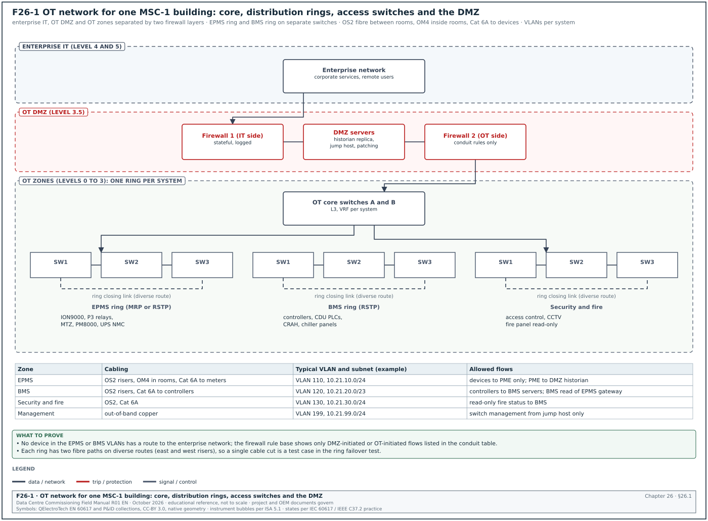
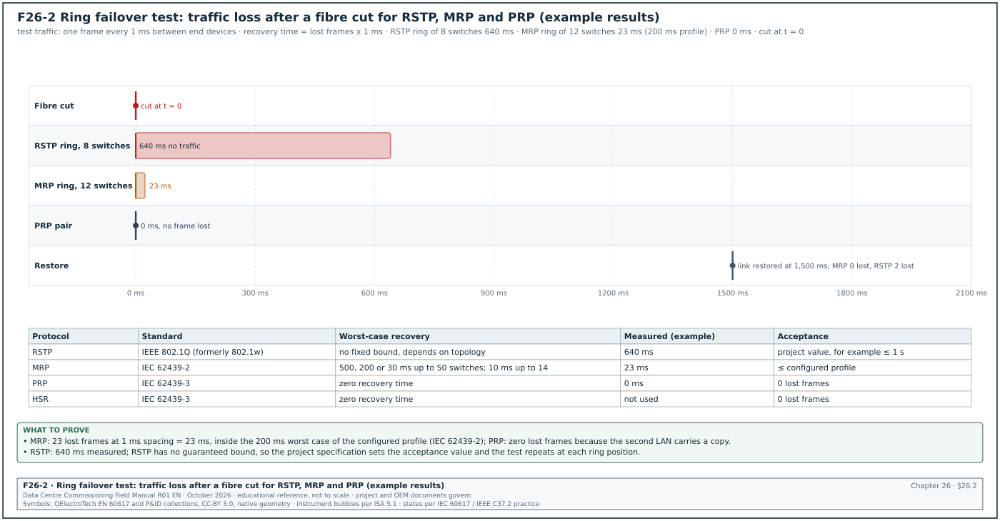
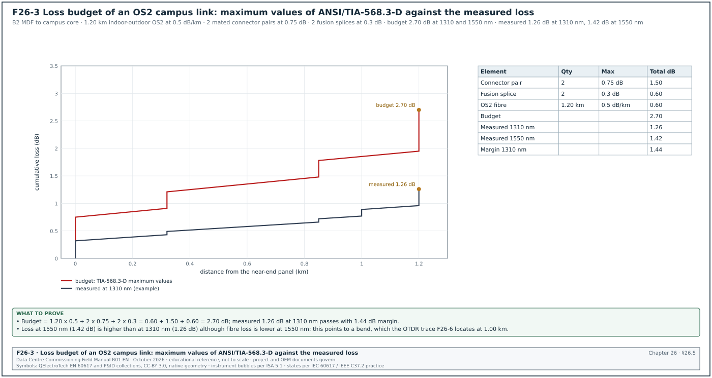
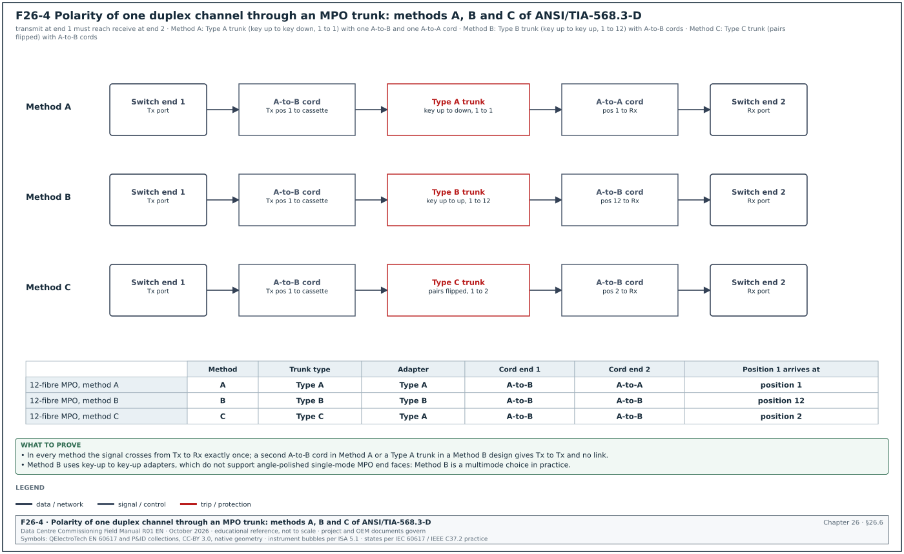
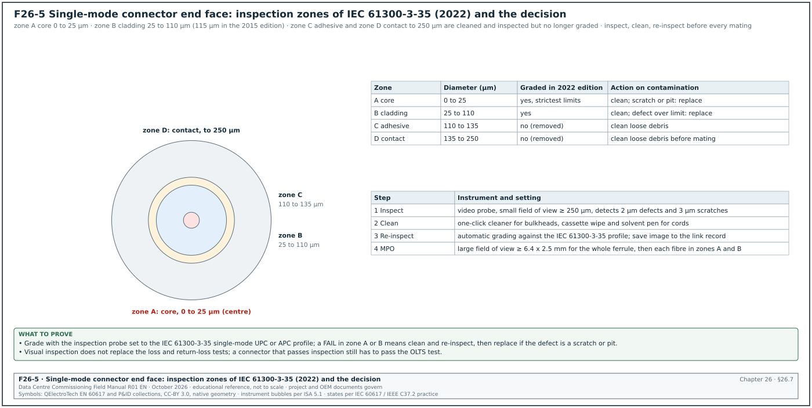
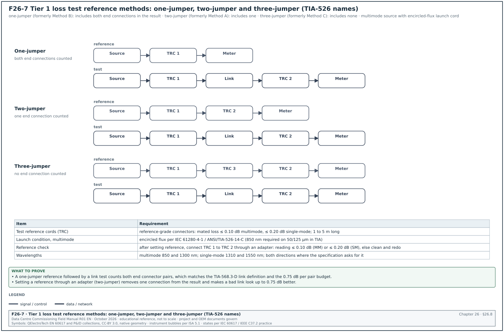
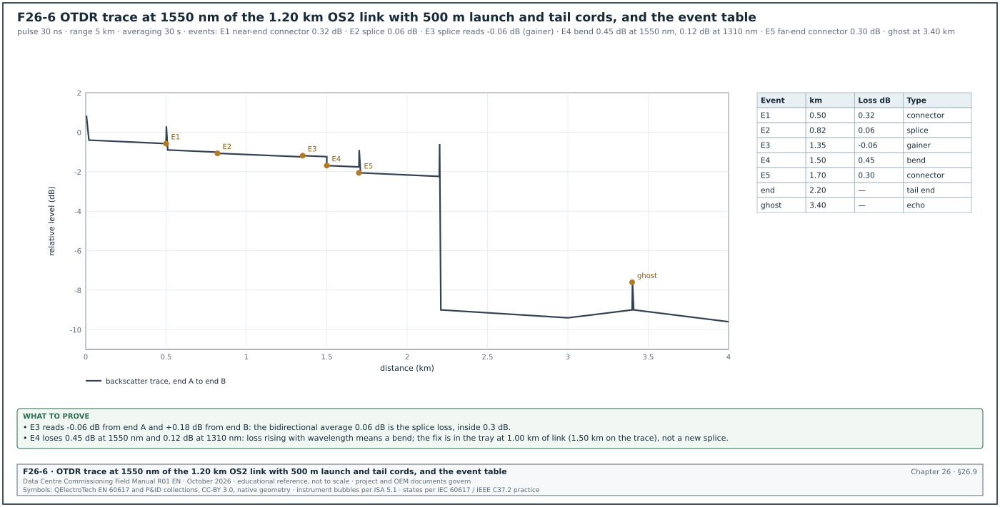
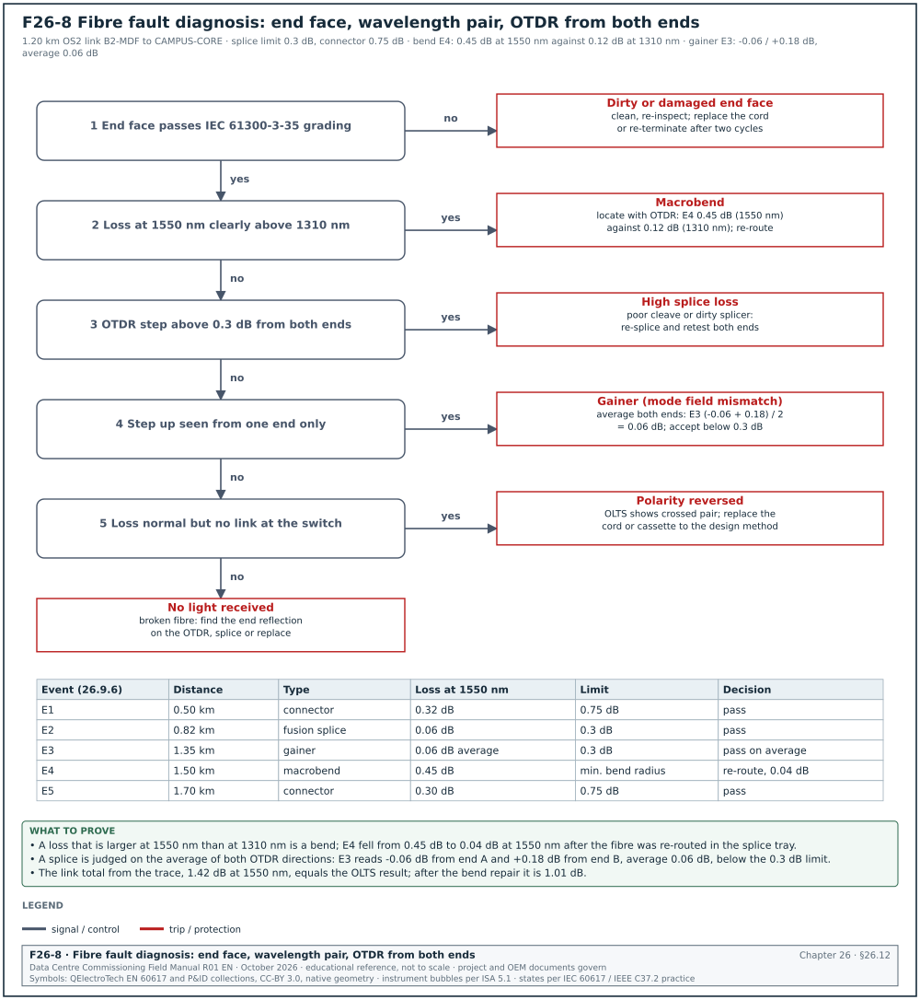

26.0Scope of this chapter
This chapter covers the operational technology (OT) network on a data-centre campus and the fibre and copper cabling under it. The network carries the electrical power monitoring system (EPMS), building management system (BMS), security and fire data. It gives the design rules, the loss budget method, the field tests and the acceptance values that a commissioning manager needs to witness and sign the cabling and network tests.
- Network architecture. Core, distribution and access layers, separate rings per system, the OT demilitarised zone (DMZ) and firewalls.
- Redundancy protocols. Rapid Spanning Tree Protocol (RSTP), Media Redundancy Protocol (MRP), Parallel Redundancy Protocol (PRP) and the ring form of PRP (HSR), with their recovery times. HSR uses the same duplicate-frame method as PRP. PRP and HSR are both defined in IEC 62439-3.
- Addressing. Virtual local area networks (VLANs), the Internet Protocol (IP) address plan and naming.
- Cabling media. OM3, OM4, OM5 and OS2 fibre, multi-fibre push-on (MPO) and LC connectors, pre-terminated trunks and Category 6A copper.
- Loss budgets. The ANSI/TIA-568.3-D maximum values and two worked loss-budget calculations.
- Polarity. Methods A, B and C for duplex and parallel signals.
- End-face inspection and cleaning. IEC 61300-3-35 zones and the inspect, clean, inspect routine.
- Tier 1 testing. Optical loss test sets (OLTS), reference methods and encircled flux.
- Tier 2 testing. Optical time-domain reflectometer (OTDR) set-up, dead zones, trace reading, ghosts, gainers, bidirectional averaging and a worked trace interpretation.
- Copper certification. Permanent link and channel, parameters and common failures.
- Labelling and records. ANSI/TIA-606-C identifiers and the test record formats.
- Faults. Common fibre faults with symptoms and fixes.
- Network commissioning. Switch configuration and backup, ring failover test, port security, Simple Network Management Protocol (SNMP), syslog, Network Time Protocol (NTP) and Precision Time Protocol (PTP).
- Acceptance. The records that close the cabling and network scope.
Cabling standards used: ANSI/TIA-568.3-D (optical fibre cabling components; check the -E revision for changed values), ANSI/TIA-568.2-D and -E (balanced twisted-pair), ANSI/TIA-606-C (administration) and ANSI/TIA-526-14-C and ANSI/TIA-526-7-A (loss measurement). Test and network standards used: ISO/IEC 14763-3 (testing of optical fibre cabling), IEC 61280-4-1 and IEC 61280-4-2 (installed cabling attenuation), IEC 61300-3-35:2022 (end-face visual inspection), IEC 62439-2:2021 (MRP) and IEC 62439-3:2021 (PRP and HSR). Also IEEE 802.1Q (RSTP), IEEE 802.3 (Ethernet physical layers), IEC 62443-3-3, and test-equipment guides from Fluke Networks, EXFO and VIAVI.
26.1OT network architecture


26.1.1Layers and zones
Figure F26-1 shows the OT network of one MSC-1 building.
| Layer | Equipment | Function | Redundancy | What to check at commissioning |
|---|---|---|---|---|
| Enterprise IT (levels 4 and 5) | corporate network | business systems, remote users | outside the OT scope | no OT device has a route to it (26.1.2 rule 5) |
| OT DMZ (level 3.5) | two firewall layers, historian replica, jump host, patch server | the only path between IT and OT | firewall pair, active-standby | firewall rule export and conduit table |
| OT core | two layer 3 switches | routing between OT VLANs, virtual routing and forwarding (VRF) per system | pair, with redundant links to each ring | VRF per system; both links to each ring up |
| Distribution rings | managed industrial or data-centre switches per electrical or mechanical room | one ring per system (EPMS, BMS, security and fire) | ring protocol (RSTP or MRP), diverse fibre routes | ring failover test (26.13.2) |
| Access | switch ports to devices | meters, relays, controllers | single attachment, or PRP for protection relays | each port in the VLAN of the IP plan; unused ports shut |
26.1.2Design rules for a data-centre OT network
- One ring per system. EPMS, BMS and security each have their own switches. A fault or a broadcast storm in the BMS network does not reach the protection relays on the EPMS ring.
- Diverse routes. The two halves of a ring use different risers and cable trays (east and west). A single cable cut or fire in one riser breaks the ring at one point only.
- Power to switches. Each ring switch is fed from a supply backed by an uninterruptible power supply (UPS), with two supply inputs from different sources where the switch accepts them.
- Zones and conduits. IEC 62443-3-3 practice: each system is a zone, and every flow between zones is listed in a conduit table and enforced by a firewall.
- No direct IT path. No OT device has a route to the enterprise network. Remote access goes through the jump host in the DMZ with multi-factor authentication.
- Time. Switches on the EPMS ring support Precision Time Protocol (PTP) as a boundary or transparent clock when the EPMS uses PTP (chapter 23.7).
- Out-of-band management. Switch management interfaces sit in a management VLAN reachable only from the jump host.
26.1.3Switch count for one building
Worked example: EPMS network of building B2. Chapter 23.15 gives 414 Ethernet devices and 3 gateways in 12 electrical rooms, about 35 ports per room. With 24-port access switches and 4 ports reserved for ring and uplinks, each switch gives 20 device ports, so each room needs 2 switches: 24 EPMS access switches per building. Two rings of 12 switches each (one per building half) keep each ring within the 14-switch limit for the 10 ms MRP profile. They are also inside the 50-switch limit for the other profiles. The BMS network is counted the same way from the BMS points list.
26.2Redundancy protocols and recovery time
Figure F26-2 shows the traffic loss measured in a ring failover test for three protocols.


| Protocol | Standard | Topology | Recovery after one link failure | Typical use on MSC-1 |
|---|---|---|---|---|
| RSTP | IEEE 802.1Q (RSTP was IEEE 802.1w) | ring or mesh | no fixed bound; hundreds of milliseconds to seconds, by topology and bridge settings | BMS rings, security |
| MRP | IEC 62439-2:2021 | ring | worst case 500, 200 or 30 ms for rings up to 50 switches, and 10 ms for rings up to 14 switches, by profile | EPMS rings |
| PRP | IEC 62439-3:2021 | two independent local area networks (LAN A and LAN B) | zero recovery time; each frame sent on both networks | protection relays (Easergy P3 supports PRP) |
| HSR | IEC 62439-3:2021 | ring with duplicated frames in both directions | zero recovery time | relays that support HSR |
Source: IEC 62439-2 recovery times as summarised in the Wikipedia article "Media Redundancy Protocol"; IEC 62439-3 abstract (26.17, items 12 and 13).
26.2.1Choosing the protocol
- Protection relays. Where relays exchange IEC 61850 generic object-oriented substation event (GOOSE) messages for interlocking or tripping, use PRP or HSR, because any frame loss delays a trip signal.
- Metering and EPMS. MRP gives a known worst case, which the alarm delays in Power Monitoring Expert (PME) (chapter 23.10) can be set against. A 200 ms profile is common.
- BMS. RSTP is acceptable when the BMS controllers tolerate a loss of communication of a few seconds without changing state. The BMS specification states the tolerance.
- One protocol per ring. Most switches do not support RSTP and MRP on one ring. The ring uses one protocol, and the core links use link aggregation or a routing protocol.
26.2.2MRP roles
An MRP ring has one media redundancy manager (MRM) and the other switches are media redundancy clients (MRC). The MRM blocks one of its ring ports in normal operation and opens it when the ring breaks. The commissioning record lists which switch is the MRM, its ring ports and the profile.
26.3VLANs, IP plan and naming
26.3.1VLAN plan (example for building B2)
| VLAN | Name | Subnet | Gateway | Contents |
|---|---|---|---|---|
| 110 | B2-EPMS-DEV | 10.21.10.0/24 | 10.21.10.1 | meters, relays, trip units, UPS cards, gateways |
| 111 | B2-EPMS-SRV | 10.21.11.0/27 | 10.21.11.1 | PME server, time server management |
| 120 | B2-BMS-DEV | 10.21.20.0/23 | 10.21.20.1 | BMS controllers, coolant distribution unit (CDU) and computer room air handler (CRAH) controllers |
| 121 | B2-BMS-SRV | 10.21.22.0/27 | 10.21.22.1 | BMS servers |
| 130 | B2-SEC | 10.21.30.0/24 | 10.21.30.1 | access control panels, cameras (or a separate camera VLAN) |
| 199 | B2-OT-MGMT | 10.21.99.0/24 | 10.21.99.1 | switch management interfaces |
26.3.2IP plan rules
- Reserve ranges. Within each device subnet, reserve ranges by device type (for example .10 to .39 relays, .40 to .99 low-voltage (LV) meters, .200 to .219 gateways). Address growth then does not mix types.
- Static addresses. OT devices use static addresses recorded in the IP plan. Dynamic addressing is not used for devices that PME or the BMS reach by address.
- One owner. The network contractor owns the IP plan document; device contractors request addresses through it.
- Record fields. The IP plan lists address, mask, gateway, VLAN, device tag, switch and port, and the contractor responsible.
| Field | Type | Example |
|---|---|---|
| IP address | dotted decimal | 10.21.10.41 |
| Mask | prefix | /24 |
| Gateway | dotted decimal | 10.21.10.1 |
| VLAN | number | 110 |
| Device tag | text | B2-DH3-LVMSB-A1-Q1-PM |
| Switch and port | text | B2-ER2-EPMS-SW01 Gi1/0/7 |
| Contractor | text | EPMS contractor |
| Status | planned, configured, tested | tested |
26.4Cabling media and components
26.4.1Fibre types
| Type | Core / cladding (µm) | Typical use on a campus | Wavelengths for testing |
|---|---|---|---|
| OM3 | 50 / 125, laser-optimised | short links inside rooms (legacy) | 850 and 1300 nm |
| OM4 | 50 / 125, higher bandwidth | links inside a building up to a few hundred metres | 850 and 1300 nm |
| OM5 | 50 / 125, wideband (850 to 953 nm) | short-wavelength multiplexing applications | 850 and 1300 nm (953 nm where specified) |
| OS2 | 9 / 125 (mode field about 9.2 µm at 1310 nm) | risers, building to building, campus | 1310 and 1550 nm |
Hyperscale campuses use OS2 for all links between rooms and buildings. Single-mode transceivers cover all lengths on the campus, and the same fibre carries future higher speeds. OM4 is used for short links inside a room where multimode transceivers are cheaper.
26.4.2Connectors and trunks
| Component | Description | Where used |
|---|---|---|
| LC duplex | small form-factor connector, two fibres | switch ports, patch panels |
| MPO (12 or 24 fibres; 8 used for some parallel optics) | multi-fibre push-on connector with alignment pins on the male side | pre-terminated trunks between rooms, parallel optics |
| Cassette | MPO at the back, LC at the front | patch panels |
| Pre-terminated trunk | factory-terminated MPO to MPO cable with a factory test report | risers and rows |
| Fusion splice | fibres joined by an electric arc in a splice tray | long links, repairs, pigtails |
| UPC and APC polish | ultra physical contact (UPC), flat, and angled physical contact (8°) end faces | APC for single-mode where low reflectance is needed; never mate APC with UPC |
26.4.3Copper
| Item | Rule (TIA-568.2-D practice) |
|---|---|
| Category | Category 6A for new device links; supports 10GBASE-T to 100 m and Power over Ethernet (PoE) |
| Permanent link | fixed cable between the patch panel and the outlet, maximum 90 m |
| Channel | permanent link plus patch cords, maximum 100 m (90 m plus 10 m of cords) |
| Shielding | U/UTP (unshielded) or F/UTP (overall foil screen) as specified; shielded systems need a continuous bond to the rack earth |
| Bend radius | at least 4 times the cable outer diameter for installed 4-pair cable (ANSI/TIA-568.0-D, as quoted by Cabling Installation & Maintenance); the cable datasheet may set a larger value |
| Revision | ANSI/TIA-568.2-E (October 2024) replaced -D; the project specification states which revision applies |
26.4.4Installation checks before any test
Make these checks during the Level 2 (L2) walkdown, before the tests in 26.8 to 26.10 measure the cabling. A visual check finds an installation fault faster than a failed test does.
- Pathway fill. Cable trays and conduits are filled to no more than the fill ratio in the specification (for example 40 to 50 %). Overfilled trays crush cables at the bottom and raise copper alien crosstalk.
- Bend radius. Fibre cables follow the minimum bend radius in the cable datasheet. The typical value is 10 times the cable diameter when not under tension and 20 times during pulling; the cable datasheet value governs. Slack loops in trays are coiled at or above that radius.
- Separation from power. Copper data cables keep the separation from power cables stated in the specification. ISO/IEC 14763-2 and EN 50174-2 give tables by cable type; the project specification states the values used.
- Fire stopping. Every penetration of a fire-rated wall or floor is sealed with the approved system and labelled with its system number.
- Earthing and bonding. Racks, trays and shielded panels are bonded to the telecommunications bonding backbone. Record the bond resistance where the specification asks (for example below 0.1 Ω to the bonding bar).
- Strain relief and cable ties. No cable tie is tight enough to deform the cable jacket; hook-and-loop ties are used on fibre bundles.
- Dust caps. Every unterminated connector and adapter has a dust cap.
- Labels. Labels fitted before testing, so that test files are saved under the final identifier.
Records: L2 cabling checklist per room, with photographs of trays, splice closures and patch panels.
26.5Loss budget: TIA-568.3-D maximum values and worked examples


26.5.1Maximum values
The loss budget uses the maximum component values of ANSI/TIA-568.3-D unless the project specification sets lower values. ANSI/TIA-568.3-E, approved 29 September 2022, replaces -D. Fluke Networks reproduces the 0.75 dB mated connector pair limit for -E; the other values in this section are -D values to check against -E.
| Component | Maximum value | Note |
|---|---|---|
| Mated connector pair (standard grade) | 0.75 dB | includes MPO and LC |
| Splice (fusion or mechanical) | 0.3 dB | a good fusion splice is below 0.1 dB |
| Multimode 50/125 cable (OM3, OM4, OM5) at 850 nm | 3.0 dB/km | 3.5 dB/km in TIA-568-C.3 and earlier |
| Multimode 50/125 cable at 1300 nm | 1.5 dB/km | |
| Single-mode inside-plant cable at 1310 and 1550 nm | 1.0 dB/km | |
| Single-mode indoor-outdoor and outside-plant cable at 1310 and 1550 nm | 0.5 dB/km | one secondary source lists 0.4 dB/km for outside plant (confirm against the outside-plant row of ANSI/TIA-568.3-E) |
| Reference-grade to standard-grade mated pair (ISO/IEC 14763-3) | 0.30 dB multimode, 0.50 dB single-mode | used for the test-cord connections |
| Reference-grade to reference-grade mated pair | 0.10 dB multimode, 0.20 dB single-mode | used for the reference check |
Source: TIA-568.3-D values as reported by Fluke Networks, the Fiber Optic Association, Hexatronic and Corning (26.17, items 1 to 5). The project checks these values against the purchased ANSI/TIA-568.3-E before contract use.
26.5.2Loss budget formula
Link loss budget (dB) = cable attenuation coefficient (dB/km) × length (km) + number of mated connector pairs × 0.75 dB + number of splices × 0.3 dB.
A link as defined in TIA-568.3-D includes the connectors at both ends of the permanent cabling. Patch cords at the equipment are part of the channel and are tested separately or included in the application check.
26.5.3Steps to calculate and use a loss budget
- Draw the link. From the as-built drawings, list every connector pair, splice and the cable length with its type (inside plant or indoor-outdoor).
- Take the length from the cable. Use the sheath length markings at both ends, or the OTDR length. The drawing length is used only as a check.
- Calculate at both wavelengths. Multimode at 850 and 1300 nm; single-mode at 1310 and 1550 nm.
- Enter the limit in the tester. Program the OLTS with the connector, splice and fibre values so that it calculates the limit per link.
- Check the application. Compare the budget with the channel insertion-loss limit of the Ethernet application. The lower of the two governs.
- Record. The loss budget per link is part of the test record.
Worked example: OS2 campus link from the building B2 main distribution frame (MDF) to the campus core. Figure F26-3 shows the result.
- Inputs. Length 1.20 km of indoor-outdoor OS2 cable and 2 mated connector pairs (the patch panels at each end). The link has 2 fusion splices, one at each building entrance where the outdoor cable meets an indoor pigtail.
- Fibre. 1.20 km × 0.5 dB/km = 0.60 dB.
- Connectors. 2 × 0.75 dB = 1.50 dB.
- Splices. 2 × 0.3 dB = 0.60 dB.
- Budget. 0.60 + 1.50 + 0.60 = 2.70 dB at 1310 nm and at 1550 nm.
- Application check. 10GBASE-LR allows a channel insertion loss of 6.2 dB over 10 km (secondary summaries; confirm against the 10GBASE-LR link power budget table of IEEE 802.3 clause 52). The TIA budget of 2.70 dB is lower, so the TIA budget governs.
- Measured. OLTS one-jumper reference: 1.26 dB at 1310 nm and 1.42 dB at 1550 nm (Figure F26-3). Both pass with margin.
- Observation. The 1550 nm loss is higher than the 1310 nm loss on a fibre whose attenuation is lower at 1550 nm. Loss that rises with wavelength points to a bend; the OTDR test (26.9.5) locates it.
Worked example: OM4 link inside electrical room ER2 through an MPO trunk with two cassettes.
- Inputs. Length 90 m of OM4 and no splices. Each cassette has an LC connection at the front and an MPO connection at the back. The two cassettes give 4 mated connector pairs.
- Fibre at 850 nm. 0.090 km × 3.0 dB/km = 0.27 dB.
- Connectors. 4 × 0.75 dB = 3.00 dB.
- Budget at 850 nm. 3.27 dB. At 1300 nm: 0.090 × 1.5 + 3.00 = 3.14 dB.
- Application check. The maximum channel insertion loss on OM4 is 1.5 dB over 150 m for 40GBASE-SR4 (IEEE 802.3ba draft Table 86-9) and 1.9 dB over 100 m for 100GBASE-SR4 (IEEE 802.3bm draft Table 95-8). Both tables are illustrative link power budgets. For 10GBASE-SR on OM4, transceiver data sheets quote 2.9 dB over 400 m (confirm against the OM4 row of the 10GBASE-S operating range, Table 52-6, and the link power budget of IEEE 802.3 clause 52). The TIA maximum budget of 3.27 dB is higher than the application limit. A link that passes the TIA limit can still fail to carry 40 or 100 Gbit/s.
- Engineered budget. The specification sets an engineered budget from the manufacturer's low-loss values, for example 0.35 dB per MPO pair and 0.15 dB per LC pair. The budget is 0.27 + 2 × 0.35 + 2 × 0.15 = 1.27 dB at 850 nm.
- Measured. 0.82 dB at 850 nm and 0.71 dB at 1300 nm. Pass against the engineered budget of 1.27 dB.
- Record. Both the TIA budget and the engineered budget are written on the test record, and the engineered budget is the pass/fail limit programmed in the tester.
26.6Polarity methods
Polarity makes the transmitter at one end connect to the receiver at the other. ANSI/TIA-568.3-D defines three connectivity methods for MPO-based cabling. Figure F26-4 traces one duplex channel through each method.


| Method | Trunk type | Array adapters | Duplex cords | Fibre position 1 at end 1 arrives at |
|---|---|---|---|---|
| A | Type A: key up to key down, position 1 to position 1 | Type A (key up to key down) | one A-to-B cord at one end, one A-to-A cord at the other | position 1 |
| B | Type B: key up to key up, position 1 to position 12 | Type B (key up to key up) | A-to-B cords at both ends | position 12 |
| C | Type C: key up to key down with pairs flipped (1 to 2, 2 to 1) | Type A | A-to-B cords at both ends | position 2 |
Source: FS.com white paper "Understanding fiber polarity", citing TIA-568.3-D (26.17, item 9).
26.6.1Rules for polarity on a project
- One method per site. The design states one polarity method for all trunks. Mixing methods produces links that need special cords.
- Cassettes. Cassettes are ordered to suit the method. A Method A design without A-to-A cords uses one pair-flipped cassette (Type AF) at one end.
- Method B and single-mode. Key-up to key-up adapters do not support angle-polished single-mode MPO end faces, so Method B is used for multimode.
- Parallel optics. For 40 and 100 Gbit/s parallel transceivers (SR4), the trunk and array cords must deliver transmit lanes to receive lanes. The white paper tables give the array cord types for each method.
- Labels. The polarity method and the cord type are written on the panel labels and in the cabling record.
26.6.2Polarity test
- Use the OLTS. A duplex OLTS reports the fibre pair as crossed or straight. The expected result is set in the tester from the design method.
- Use a visual fault locator for single links. Inject red light at the transmit (Tx) port of end 1 and see which LC position lights at end 2.
- Use an MPO tester for trunks. An MPO tester with a polarity function maps all 12 or 24 positions.
- Record. The polarity result is a field on the test record (pass, or the mapping found).
26.7End-face inspection and cleaning


26.7.1Why inspection comes first
Contamination is the most common cause of high loss and high reflectance in new fibre installations. A dirty connector also transfers dirt to the clean connector it is mated with, including the test reference cords. The routine is inspect, clean if needed, re-inspect, then mate. This applies to every connector, including those on new patch cords and on the tester.
26.7.2IEC 61300-3-35 zones
Figure F26-5 shows the zones of a single-mode end face. IEC 61300-3-35:2022 (Edition 3) grades zones A (core) and B (cladding). Zones C (adhesive) and D (contact) were removed from the pass/fail criteria, and the outer edge of zone B moved from 115 µm to 110 µm.
| Zone | Diameter (single-mode, µm) | Graded in the 2022 edition | Note |
|---|---|---|---|
| A core | 0 to 25 | yes | the 2015 edition allowed no scratch or defect in the single-mode core zone |
| B cladding | 25 to 110 | yes | defects limited by size and count |
| C adhesive | 110 to 135 | no | clean loose debris |
| D contact | 135 to 250 | no | clean before mating; debris migrates to the core |
The exact count and size limits per zone depend on the connector type (single-mode UPC, APC, multimode) and are built into inspection probes as grading profiles. Set the probe to the IEC 61300-3-35 profile for the connector type and save the image with the result. Confirm the numeric limits against the current edition of IEC 61300-3-35 when a result is disputed.
26.7.3Inspection equipment
| Equipment | Requirement | Use |
|---|---|---|
| Video inspection probe, small field of view | at least 250 µm field; detects 2 µm defects and 3 µm scratches | single-fibre connectors, each fibre of an MPO |
| Video probe, large field of view | at least 6.4 × 2.5 mm; detects 10 µm debris | whole MPO ferrule |
| Automatic grading software | IEC 61300-3-35 profiles | pass/fail without operator judgement |
| Tips | one per connector type (LC UPC, LC APC, MPO, bulkhead) | correct focus and angle |
26.7.4Cleaning procedure
- Inspect. Inspect the end face with the probe and grade it.
- Dry clean. If it fails, clean with a one-click cleaner (bulkhead) or a cassette cleaner (cord).
- Re-inspect. Grade again.
- Wet-to-dry clean. If it still fails, clean with a lint-free wipe moistened with fibre cleaning solvent, then dry wipe, then re-inspect.
- Replace. If a scratch or pit remains in zone A or B after two cleaning cycles, replace the cord or re-terminate the connector.
- Cap. Fit dust caps on every connector not in use. Caps are not clean; inspect again before mating.
- Record. Save the final image with the link record for panel connectors.
Common errors:
- Cleaning without inspecting. A cleaner can move debris from the cladding to the core. Always inspect after cleaning.
- Mating to check. Mating a dirty connector to the tester contaminates the test reference cord. Every later result is then wrong.
- Using alcohol wipes from a general kit. Residue leaves a film; use the solvent and wipes specified for fibre.
26.8Tier 1 testing: optical loss test set and reference methods


26.8.1What Tier 1 measures
Tier 1 (basic) certification measures the insertion loss of each fibre with a light source and a power meter, or an OLTS that combines both, and checks length and polarity. ISO/IEC 14763-3 and IEC 61280-4-1 (multimode) and IEC 61280-4-2 (single-mode) define the methods; ANSI/TIA-526-14-C and ANSI/TIA-526-7-A are the TIA versions.
26.8.2Reference methods
The reference sets 0 dB on the power meter before the link is measured. The method decides how many end connections are included in the result. Figure F26-7 shows the three methods. TIA-526 calls them one-jumper, two-jumper and three-jumper reference (formerly Method B, Method A and Method C).
| Reference method | Former TIA name | End connections included in the result | When used |
|---|---|---|---|
| One-jumper | Method B | both | preferred for links with connectors of the same type as the tester ports; matches the TIA link definition |
| Two-jumper | Method A | one | when the one-jumper method cannot be used (connector mismatch); add one connection allowance |
| Three-jumper | Method C | none | when testing a link that will be used with equipment cords; the result excludes the end connections |
Check: A reference set through an adapter (two jumpers joined) and then called a one-jumper result removes one connection from the measurement. Every link then looks up to 0.75 dB better. Fluke Networks notes that a reference set through a bulkhead adapter adds uncertainty of up to 1.5 dB. Watch the reference step during the witness test.
26.8.3Encircled flux for multimode
A multimode source can launch light into more or fewer modes. An overfilled launch gives a pessimistic (high) loss; an underfilled launch gives an optimistic (low) loss. Encircled flux (EF) defines the launch condition so that results from different testers agree. ANSI/TIA-568.3-E and ISO/IEC 11801 defer launch conditions to ANSI/TIA-526-14-C and IEC 61280-4-1. ANSI/TIA-526-14-C requires EF at 850 nm on 50/125 µm fibre and recommends it at 1300 nm; IEC 61280-4-1 requires EF at both wavelengths.
- Use an EF-compliant source and cord. Either a launch conditioner on a light-emitting diode (LED) source, or a matched source and test reference cord (the two options of TIA-TSB-4979).
- Do not use a mandrel as an EF device. A mandrel wrap reduces overfill but does not guarantee EF compliance.
- Record the method. The test record names the source, the cord and the EF method.
26.8.4OLTS procedure
Purpose: Measure insertion loss, length and polarity of every fibre and compare with the limit.
Trigger: Link installed, terminated, labelled and end faces inspected.
Owner: Cabling contractor technician; the commissioning authority (CxA) witnesses a sample (for example 10 % of links, including all campus links).
Steps:
- Check the tester. Calibration within 12 months; firmware recorded; test limit set to the project limit (TIA budget or engineered budget).
- Warm up. Switch the sources on for at least 5 minutes before setting the reference (or the time in the tester manual).
- Inspect and clean the test cords. Grade the test reference cord (TRC) end faces.
- Set the reference. One-jumper method: connect TRC 1 from the source port directly to the meter port; set reference.
- Verify the reference. Disconnect TRC 1 from the meter, connect TRC 2 to the meter, join TRC 1 and TRC 2 with an adapter. Reading must be at or below 0.10 dB (multimode) or 0.20 dB (single-mode) for reference-grade cords. If higher, clean and repeat from step 4.
- Keep TRC 1 on the source. Disconnecting TRC 1 from the source invalidates the reference.
- Connect to the link. TRC 1 to end 1 of the link, TRC 2 from end 2 to the meter (or the remote unit).
- Test at two wavelengths. 850 and 1300 nm for multimode; 1310 and 1550 nm for single-mode.
- Test both directions where specified. Swap the main and remote units or use a bidirectional tester.
- Save with the label name. Use the TIA-606 identifier of the link (26.11).
- Re-check the reference. Every 4 hours, after a temperature change of more than 10 °C, and before the last link of each working day.
Acceptance: Every fibre at or below the loss limit at both wavelengths; polarity as designed; length within the drawing tolerance (for example ±5 %).
26.8.5Tier 1 test record fields
| Field | Type | Example |
|---|---|---|
| Link ID | TIA-606 identifier | B2-MDF.R03-U40:01 to CAMPUS-CORE.R11-U38:01 |
| Fibre type | text | OS2 indoor-outdoor |
| Length | m | 1,204 |
| Reference method | text | one-jumper |
| Test cords | serial numbers | TRC-SM-014, TRC-SM-015 |
| Limit | dB per wavelength | 2.70 / 2.70 |
| Loss 1310 nm / 1550 nm | dB | 1.26 / 1.42 |
| Margin | dB | 1.44 / 1.28 |
| Polarity | text | A-to-B, as designed |
| Tester | model, serial, calibration date | per certificate |
| Result | pass / fail | pass |
| Operator, date | text | cabling technician, 2026-11-03 |
26.9Tier 2 testing: OTDR


26.9.1What the OTDR shows
An OTDR sends light pulses into the fibre and measures the light scattered back (backscatter) and reflected from connectors and ends. It plots the returned level against distance. The trace shows the loss of each splice, connector and bend, and where each one is. Tier 2 (extended) certification adds an OTDR trace to the Tier 1 result; the OTDR does not replace the OLTS loss measurement for acceptance.
26.9.2Set-up
| Setting | Typical value | Reason |
|---|---|---|
| Wavelengths | 1310 and 1550 nm (single-mode); 850 and 1300 nm (multimode) | bends show more loss at the longer wavelength |
| Pulse width | 10 to 30 ns for links up to 2 km; longer for long links | short pulses give small dead zones; long pulses give more range |
| Range | 2 to 3 times the link length including cords | the end and any ghost must be on screen |
| Averaging time | 15 to 30 s | lower noise |
| Index of refraction (IOR) | from the cable datasheet, for example 1.4676 at 1310 nm and 1.4682 at 1550 nm (Corning SMF-28 Ultra, PI 1424) | correct distance |
| Launch cord | 500 m to 1 km for single-mode, 100 to 300 m for multimode, and at least twice the attenuation dead zone | moves the dead zone off the first connector |
| Tail (receive) cord | same type and length as the launch cord | lets the far-end connector be measured |
26.9.3Dead zones
- Event dead zone. The minimum distance after a reflective event at which the OTDR can see a second event. Fluke Networks gives 3.7 m at 850 nm with a 20 ns pulse for one module.
- Attenuation dead zone. The minimum distance after a reflective event at which the OTDR can measure the loss of a second event. The same module: 10 m at 850 nm with a 20 ns pulse.
- Effect of pulse width. A wider pulse gives a larger dead zone. Two connectors closer together than the attenuation dead zone appear as one event with their losses combined.
- Effect of reflectance. A highly reflective event (a dirty or air-gapped connector) gives a longer dead zone.
26.9.4Reading a trace
| Feature on the trace | What it means | How to confirm |
|---|---|---|
| Straight sloping line | fibre backscatter; the slope is the attenuation in dB/km | slope near the datasheet value: Corning SMF-28 Ultra (PI 1424) lists a maximum of 0.32 dB/km at 1310 nm and 0.18 dB/km at 1550 nm; use the datasheet of the installed cable |
| Spike followed by a step down | reflective event: connector or mechanical splice | position matches a patch panel on the drawing |
| Step down without a spike | non-reflective event: fusion splice or bend | compare 1310 and 1550 nm: a bend has more loss at 1550 nm |
| Step up | gainer: a splice between fibres with different backscatter | test from the other end and average |
| Large spike then noise | the end of the fibre or a break | distance compared with the link length |
| Spike beyond the end, in the noise | ghost: a second reflection of a strong reflective event | appears at a multiple of the distance of a strong reflection; no loss step after it |
26.9.5Ghosts, gainers and bidirectional averaging
- Ghosts. A strong reflection travels back to the OTDR, reflects at the OTDR connector and travels out again. The OTDR sees it as a second event at twice the distance of the original reflection (or at the sum of distances of two reflective events). A ghost has no loss step after it and can sit beyond the fibre end. The fix is to clean the connector that causes the strong reflection or to use a launch cord with an angled connector at the OTDR.
- Gainers. At a splice between fibres with different mode field diameter or backscatter coefficient, the backscatter level after the splice can be higher than before. The OTDR then shows a gain. Fluke Networks explains that the OTDR shows a loss value lower than the real value. Tested from the other end, the same splice shows a loss larger than the real value. EXFO gives an example of -0.25 dB one way and +0.35 dB the other.
- Bidirectional averaging. The real splice loss is the average of the two directions: (loss A to B + loss B to A) / 2. The specification should require bidirectional OTDR testing for single-mode links with splices. EXFO notes that this averaging applies to single-mode fibre.
26.9.6Worked trace interpretation
Figure F26-6 shows the trace of the 1.20 km OS2 link of 26.5.3, taken at 1550 nm from end A. The test used a 500 m launch cord and a 500 m tail cord.
Worked example: Reading the OTDR trace of link B2-MDF to CAMPUS-CORE, fibre 01.
- Launch dead zone. The large spike at 0 km is the OTDR connector. The launch cord moves the first link connector to 0.50 km, outside the dead zone.
- E1 at 0.50 km. Spike and step: the near-end panel connector. Loss 0.32 dB, below 0.75 dB. Reflectance recorded by the tester (for example -52 dB for UPC; the project specification sets the reflectance limit).
- E2 at 0.82 km (0.32 km into the link). Step without spike: building-entrance fusion splice. Loss 0.06 dB, below 0.3 dB.
- E3 at 1.35 km (0.85 km into the link). Step up of 0.06 dB: a gainer. From end B the same splice reads +0.18 dB. Bidirectional average: (-0.06 + 0.18) / 2 = 0.06 dB, below 0.3 dB. The splice is accepted.
- E4 at 1.50 km (1.00 km into the link). Step without spike, 0.45 dB at 1550 nm. At 1310 nm the same event is 0.12 dB. Loss that is much larger at 1550 nm is the signature of a macrobend. The drawing shows a splice closure tray at that position. The team opens the tray, finds a fibre routed tighter than the minimum bend radius, re-routes it and re-tests: 0.04 dB at 1550 nm.
- E5 at 1.70 km. Spike and step: the far-end panel connector. Loss 0.30 dB.
- Tail and end. The tail cord runs to 2.20 km, where the end reflection appears and the trace drops into noise.
- Ghost at 3.40 km. A spike in the noise with no step after it. Its distance is twice the distance of the strong reflection at E5 (2 × 1.70 = 3.40 km), so it is an echo of that reflection. No action other than recording it; cleaning E5 reduces it.
- Totals. Link loss from E1 to E5 including both connectors is read from the trace, with E3 taken as its bidirectional average. The sum is 0.32 + 0.06 + 0.06 + 0.45 + 0.30 + 1.20 km × 0.19 dB/km = 1.42 dB at 1550 nm. This matches the OLTS result of 26.5.3. After the bend repair: 1.01 dB.
Records: The OTDR file (Standard OTDR Record (SOR) format or the tester native format) for both directions and both wavelengths, the event table, and the bidirectional average for each splice.
26.9.7OTDR event table fields
| Field | Type | Example |
|---|---|---|
| Link ID and fibre | text | B2-MDF to CAMPUS-CORE, fibre 01 |
| Direction | A to B, B to A | A to B |
| Wavelength and pulse | nm, ns | 1550 nm, 30 ns |
| Launch and tail cord | m, serial number | 500 m LC-SM-L07, 500 m LC-SM-T07 |
| IOR | number | 1.4682 (from the cable datasheet) |
| Event number and distance | km | E3, 1.35 km |
| Event type | connector, splice, bend, gainer, end, ghost | gainer |
| Loss | dB | -0.06 (A to B), +0.18 (B to A) |
| Bidirectional average | dB | 0.06 |
| Reflectance | dB | not applicable for a splice |
| Limit | dB | 0.3 |
| Result | pass / fail | pass |
26.10Copper certification
26.10.1Permanent link and channel
| Configuration | What is tested | Length limit | Test adapter |
|---|---|---|---|
| Permanent link | fixed cable from patch panel to outlet including both connectors, without patch cords | 90 m | permanent link adapters; the adapter cords are excluded from the result |
| Channel | permanent link plus equipment and patch cords | 100 m | channel adapters; the end plugs of the cords are excluded |
Installers certify the permanent link at handover, because the patch cords change during operation. The permanent link limits are tighter than the channel limits for the same category.
26.10.2Parameters
| Parameter | What it measures | Typical cause of failure | Action on failure |
|---|---|---|---|
| Wire map | each conductor to the right pin, no opens, shorts, reversed, crossed or split pairs | termination error | re-terminate, re-test |
| Length | electrical length from propagation delay | cable over 90 m in the permanent link | re-route or move the outlet |
| Insertion loss | signal loss over frequency | length, poor cable, high temperature | check length and cable type; re-test |
| NEXT and PSNEXT | near-end crosstalk (NEXT) between pairs, and its power sum (PSNEXT) | untwisting at the termination | re-terminate with the pair twist kept to the termination |
| ACR-F and PSACR-F | attenuation-to-crosstalk ratio, far end (ACR-F): far-end crosstalk relative to the received signal, and its power sum (PSACR-F) | poor cable or connectors | replace the connectors; re-test |
| Return loss | reflected signal from impedance changes | kinks, crushed cable, poor termination | replace the damaged section or re-terminate |
| Propagation delay and delay skew | time and difference between pairs | mixed cable types | replace with one cable type |
| DC resistance unbalance | direct-current (DC) resistance difference in a pair, important for PoE | poor termination; extended to more categories in TIA-568.2-E | re-terminate, re-test |
| PS ANEXT (Category 6A) | power-sum (PS) alien near-end crosstalk (ANEXT) from adjacent cables | tight bundles; tested on a sample | loosen the bundle and re-test |
26.10.3Copper test procedure
- Check the tester. Calibration within 12 months; accuracy level suitable for Category 6A (Level IIIe or higher, the ANSI/TIA-1152-A accuracy level for Category 6A); firmware and test limit database current.
- Select the limit. TIA Category 6A permanent link (or the revision named in the specification).
- Set the reference. Run the tester's set-reference with the adapters supplied.
- Test each link. Save each result under the TIA-606 identifier.
- Handle marginal results. A result marked with an asterisk (inside the tester accuracy of the limit) is treated as specified; most specifications reject marginal passes on new installations.
- Test alien crosstalk on a sample. Where the specification requires it, test PS ANEXT on the worst-case bundle.
- Record. Export the native tester file and a PDF summary.
Acceptance: Every permanent link passes all parameters at the limit for its category; no marginal pass unless the specification allows it.
26.11Labelling and records (ANSI/TIA-606-C)
26.11.1Identifiers
ANSI/TIA-606-C sets identifiers for spaces, cabinets, panels, ports and cables, and scales the requirements by four administration classes. A common form in data centres is floor and space (FS), then the cabinet by grid location, then the panel by rack unit and the port.
| Element | Format (example) | Example on MSC-1 |
|---|---|---|
| Space | floor + space letter | 1A (building B2, floor 1, room A = ER2) |
| Cabinet | space + grid position | 1A.AD02 |
| Panel | cabinet + rack unit | 1A.AD02-40 |
| Port | panel + port number | 1A.AD02-40:02 |
| Link | port at end 1 / port at end 2 | 1A.AD02-40:01/1B.AK07-38:01 |
| Campus prefix | building prefix where links leave the building | B2-1A.AD02-40:01 |
Check: The format is fixed in the project labelling standard before cables are pulled. The same identifier appears on the label, in the test record and in the data-centre infrastructure management (DCIM) or cable management database. Confirm the format against the edition of TIA-606 named in the contract (the C revision; a D revision is referred to by some sources).
26.11.2Label rules
- Both ends. Every cable is labelled at both ends within 300 mm of the termination.
- Panels and ports. Every panel and port labelled with its identifier.
- Durable labels. Machine-printed, self-laminating labels; no handwriting.
- Polarity and method. Panels state the polarity method and fibre type.
- Records match labels. Test records use the same identifiers; the CxA checks a sample of labels against the records during the walkdown.
26.12Common fibre faults: symptoms, causes and fixes
Diagnose a link that fails its loss limit in a fixed order: inspect the end faces first, then compare the two wavelengths, then read the OTDR trace from both ends. Figure F26-8 shows this order as a decision tree with the values of the 1.20 km OS2 worked example of 26.9.6.


| Fault | Symptom on OLTS | Symptom on OTDR | Cause | Fix |
|---|---|---|---|---|
| Dirty connector | high loss that changes each time it is mated | high reflectance and loss at the connector | dust, oil, previous mating with a dirty cord | inspect, clean, re-inspect |
| Damaged end face | high loss that cleaning does not remove | high loss and reflectance | scratch, pit, chipped ferrule | replace cord or re-terminate |
| Macrobend | loss higher at 1550 nm than at 1310 nm (or 1300 vs 850 nm) | non-reflective step larger at the longer wavelength | tight tray routing, cable tie, door hinge | re-route to the minimum bend radius |
| Wrong fibre type | very high loss; multimode light in single-mode or the reverse | large step at the junction | OM4 cord in an OS2 link, or the reverse | replace with the right type |
| Polarity reversed | link loss normal but no link at the switch; tester shows crossed pairs | not shown | wrong cord or cassette type | replace cord or cassette per the method |
| Broken fibre | no light received | end reflection at a short distance | crush, pull damage | locate with OTDR and splice or replace |
| High splice loss | loss above the budget | step above 0.3 dB in both directions | poor cleave, contamination in the splicer | re-splice |
| Gainer | not visible | step up from one end | mode field diameter mismatch | bidirectional average |
| APC mated to UPC | very high loss and damage | high loss | mixed polish types | replace both connectors' cords, inspect for damage |
| Air gap at MPO | high loss on some fibres of an MPO | reflective events | debris on the ferrule, pin damage | inspect whole ferrule with large field of view, clean |
26.13Network commissioning
26.13.1Switch configuration verification
Purpose: Prove that each switch holds the approved configuration, and that the configuration is backed up.
Owner: Network contractor; CxA and owner OT security witness a sample.
Steps:
- Firmware. Record the firmware version; it matches the approved version list.
- Hostname and management address. As in the IP plan; management only in VLAN 199.
- VLANs and ports. Each port in the VLAN of the IP plan; unused ports shut down and placed in an unused VLAN.
- Port security. Limit learned media access control (MAC) addresses per access port (for example 1 or 2) and set the violation action as specified.
- Ring protocol. RSTP priority or MRP role (MRM or MRC), ring ports, profile; recorded per switch.
- PTP. PTP mode (boundary or transparent clock) and profile on every switch in the EPMS path.
- Management protocols. Secure Shell (SSH) only (Telnet and Hypertext Transfer Protocol (HTTP) disabled), SNMP version 3 (SNMPv3) with authentication and privacy, syslog to the security information and event management (SIEM) server, NTP to the OT time server.
- Accounts. Named accounts or central authentication; default accounts disabled.
- Backup. Export the running configuration to the network backup server; record file name and checksum.
- Compare. Compare the exported configuration with the approved template line by line; differences are approved or corrected.
Acceptance: Configuration equal to the approved template; backup saved; SNMP, syslog and NTP checks received at the servers.
26.13.2Ring failover test
Purpose: Measure the traffic loss when a ring link or switch fails and when it is restored, and compare with the acceptance value.
Trigger: Ring complete, switch configuration verified, end devices or test endpoints connected.
Owner: Network contractor; CxA witnesses 100 %.
Inputs: A traffic generator or two laptops sending a constant frame stream (for example one frame every 1 ms with sequence numbers), and a packet capture at the receiver. A continuous ping at 1 s intervals is too coarse for MRP and PRP.
Steps:
- Choose the paths. Select end points so that the test traffic crosses the link that will be broken.
- Start the traffic. One frame every 1 ms; record the start.
- Break the link. Pull one ring fibre (or both fibres of the link) at a recorded time.
- Measure loss. Count lost frames; recovery time = lost frames × 1 ms.
- Restore the link. Reconnect and count lost frames again (some protocols lose frames on restore).
- Repeat at each ring position. Break each ring link in turn, and power off one switch.
- Check the systems. During each break, PME and the BMS must not raise device communication alarms if the alarm delay is longer than the recovery time (chapter 23.10).
- Record. Fill the failover test record.
Acceptance: Each recovery time at or below the value in the specification. For MRP, the limit is the configured profile worst case; for PRP and HSR, zero lost frames; for RSTP, the project value (for example 1 s).
Worked example: Failover test on EPMS ring B2-EPMS-RING1 (12 switches, MRP, 200 ms profile, MRM at B2-ER1-EPMS-SW01). Test stream 1 frame per ms between a laptop on SW04 and a laptop on SW09.
| Test | Lost frames on break | Recovery time | Lost frames on restore | Result |
|---|---|---|---|---|
| Break SW04 to SW05 fibre | 23 | 23 ms | 0 | pass (≤ 200 ms) |
| Break SW08 to SW09 fibre | 19 | 19 ms | 0 | pass |
| Power off SW06 | 31 | 31 ms | 0 | pass |
| Break MRM ring port | 21 | 21 ms | 0 | pass |
| BMS ring B2-BMS-RING1, RSTP, 8 switches, break SW03 to SW04 | 640 | 640 ms | 2 | pass (≤ 1 s project value) |
| Relay PRP pair, LAN A switch power off | 0 | 0 ms | 0 | pass |
The PME device communication alarm delay of 5 minutes (chapter 23.10.3) is far longer than the worst measured recovery of 640 ms. The alarm log shows no communication alarm during the test.
26.13.3Interfaces to other contractors
| Dependency | From | To | Needed before |
|---|---|---|---|
| Fibre and copper test records accepted | cabling contractor | network contractor | switch installation sign-off |
| Switch configuration verified | network contractor | EPMS and BMS contractors | device communication tests (chapter 24.5) |
| PTP working on the EPMS path | network contractor and time server supplier | EPMS contractor | sequence-of-events (SOE) test (chapter 24.10) |
| Firewall rules exported | network or security contractor | owner security | integration tests |
| Ring failover test passed | network contractor | CxA | Level 4 (L4) sign-off of EPMS and BMS |
26.14Acceptance and handover
| Record | Content | Signed by |
|---|---|---|
| Fibre Tier 1 records | every fibre, both wavelengths, polarity | cabling contractor; CxA sample |
| Fibre Tier 2 records | OTDR files both directions for single-mode links with splices | cabling contractor |
| End-face images | panel connectors after final cleaning | cabling contractor |
| Copper certification | every permanent link | cabling contractor; CxA sample |
| Label audit | sample check of labels against records | CxA |
| IP plan and VLAN plan | as configured | network contractor |
| Switch configurations and backups | per switch, with checksum | network contractor |
| Ring failover record | each ring, each position | network contractor; CxA |
| Firewall rule export and conduit table | per firewall | security contractor; owner security |
| As-built drawings | pathways, panels, rings | contractors |
Steps:
- Compile. Contractors submit the records within 5 working days of the last test.
- Review. The CxA reviews within 5 working days; a sample of tester files is opened and checked against the summary.
- Close issues. Category A and B issues closed with retest records.
- Sign. The commissioning manager signs the cabling and network acceptance certificate.
26.15Common errors in cabling and network tests
- Reference set through an adapter. Every link appears up to 0.75 dB better. Watch the reference step and the reference check reading.
- Test cords not inspected. A dirty cord adds loss to every link of the day. Inspect the cords at the start and after every 20 links.
- Wrong limit in the tester. A generic TIA limit used where the specification sets an engineered budget passes links that will fail the application.
- OTDR from one end only. Gainers are accepted as low loss; splices with high real loss pass.
- Copper channel tested instead of permanent link. The result changes when cords are replaced.
- Ring failover tested with ping at 1 s. The test cannot measure an MRP recovery of 20 ms and reports 0 or 1 lost ping.
- Configuration changed after backup. The backup is old at handover. Take the final backup after the last change and compare checksums.
26.16Checklist for site use
- Design. One ring per system, diverse routes, switches on UPS-backed supplies, DMZ between IT and OT.
- Protocols. MRP profile or RSTP settings recorded; PRP for relays where GOOSE is used.
- IP plan. Every device has a static address, VLAN, switch and port recorded.
- Media. Fibre type and polish (UPC or APC) recorded per link; no mixing of APC and UPC.
- Loss budget. TIA budget and engineered budget calculated for each link at both wavelengths and entered in the tester.
- Polarity. One method on site; cords and cassettes match; polarity result on every record.
- Inspection. Every connector inspected and graded before mating; images saved for panels.
- OLTS. One-jumper reference; reference check at or below 0.10 dB (multimode) or 0.20 dB (single-mode); EF launch for multimode.
- OTDR. Launch and tail cords; both directions for single-mode links with splices; gainers averaged; bends found by wavelength comparison.
- Copper. Permanent link certified at the specified category; no marginal pass unless allowed.
- Labels. TIA-606 identifiers at both ends; records use the same identifiers.
- Switches. Configuration equal to the template; unused ports shut; SSH, SNMPv3, syslog, NTP and PTP verified.
- Failover. Each ring tested at each position with a 1 ms frame stream; results inside the acceptance values.
- Backups. Final configuration backups with checksums.
- Acceptance. All records in the package; issues A and B closed; certificate signed.
26.17Sources
- Fluke Networks, "New Loss Budget Values for Reference Grade Connectors in ANSI/TIA-568.3-E", accessed 1 November 2026. https://flukenetworks.com/content/new-loss-budget-values-reference-grade-connectors-ansitia-5683-d
- Fluke Networks, "Fiber Optic Link Loss Budget Calculation - SimpliFiber Pro", knowledge base, accessed 31 October 2026. https://ru.flukenetworks.com/knowledge-base/simplifiber-pro/loss-budget-calculation-simplifiber-pro
- The Fiber Optic Association, "TIA 568 Standard for Fiber Optics", accessed 31 October 2026. https://www.thefoa.org/tech/tia568b3.htm
- Hexatronic Data Center, "Understanding Telecommunications Industry Association (TIA) Standards", accessed 31 October 2026. https://hexatronicdatacenter.com/en/knowledge/understanding-telecommunications-industry-association-tia-standards
- Corning, "Recommended Fiber Optic Test Guidelines", LAN-1561-AEN, accessed 31 October 2026. https://www.corning.com/catalog/coc/documents/misc/LAN-1561-AEN.pdf
- OpenExamPrep, "Optical Loss Budgets and Certification Testing" (BICSI Technician study guide), accessed 31 October 2026. https://open-exam-prep.com/study-guides/bicsi-technician/chapter-3/optical-loss-budgets-and-testing
- Fluke Networks, "Encircled Flux - CertiFiber Pro", knowledge base, accessed 31 October 2026. https://es.flukenetworks.com/knowledge-base/certifiber-pro/encircled-flux-certifiber-pro
- Fluke Networks, "Easier Fiber End Face Inspections: Key Changes to IEC 61300-3-35", accessed 31 October 2026. https://www.flukenetworks.com/blog/cabling-chronicles/easier-fiber-end-face-inspection
- FS.com, "Understanding Fiber Polarity" white paper, accessed 31 October 2026. https://img-en.fs.com/file/white_paper/understanding-fiber-polarity.pdf
- Fluke Networks, "Attenuation and event deadzones - DTX Compact OTDR Module", accessed 31 October 2026. https://pt.flukenetworks.com/content/attenuation-and-event-deadzones-dtx-compact-otdr-module
- Fluke Networks, "Cable Testing 101: There's No Gain with Gainers", accessed 31 October 2026. https://flukenetworks.com/blog/cabling-chronicles/cable-testing-101-theres-no-gain-gainers
- Wikipedia, "Media Redundancy Protocol" (summary of IEC 62439-2 recovery times), accessed 31 October 2026. https://en.wikipedia.org/wiki/Media_Redundancy_Protocol
- IEC 62439-3:2021, Industrial communication networks, High availability automation networks, Part 3: PRP and HSR, IEC. https://webstore.iec.ch/en/publication/64423
- EXFO, "Understanding and mitigating OTDR gainers" application note, accessed 31 October 2026. https://trsrentelco.com/sites/default/files/resources-pdfs/Understanding_and_mitigating_OTDR_gainers.pdf
- CommScope, "Gainer or High Splice Loss: The Effects of Mode Field Diameter", accessed 31 October 2026. https://www.commscope.com/blog/2018/gainer-or-high-splice-loss-the-effects-of-mode-field-diameter/
- IEC 61300-3-35:2022, Fibre optic interconnecting devices and passive components, Basic test and measurement procedures, Part 3-35: Examinations and measurements, Visual inspection of fibre optic connectors and fibre-stub transceivers, IEC. https://webstore.iec.ch/en/publication/64254
- OpenExamPrep, "Copper Field Testing" (BICSI RCDD study guide), accessed 31 October 2026. https://open-exam-prep.com/study-guides/bicsi-rcdd/field-testing/copper-testing
- OpenExamPrep, "Telecommunications Pathways, Spaces, and Administration" (TIA-606 identifiers), accessed 31 October 2026. https://open-exam-prep.com/study-guides/bicsi-inst2-copper/standards-and-code-compliance/pathways-spaces-admin
- Texas Instruments, SPRT769, industrial Ethernet redundancy (RSTP, MRP, PRP, HSR), December 2023. https://ti.com/document-viewer/lit/html/SPRT769/GUID-00161BEF-9FB6-4E90-9DA1-CA46E73159B7
- IEC 62443-3-3:2013, System security requirements and security levels, IEC. https://webstore.iec.ch/en/publication/7033
- Corning, SMF-28 Ultra optical fibre product information sheet PI 1424, accessed 1 November 2026 (values read from the search summary; the PDF refused automated download). https://csmedia.corning.com/media/worldwide/coc/documents/Fiber/product-information-sheets/PI-1424-AEN.pdf
- IEEE P802.3bm, "Table 95-8, 100GBASE-SR4 illustrative link power budget", task force draft, accessed 1 November 2026. https://www.ieee802.org/3/bm/public/mmfadhoc/meetings/jul24_14/8023-95CMP2.pdf
- IEEE P802.3ba, "Table 86-9, 40GBASE-SR4 and 40GBASE-SR10 illustrative link power budgets" (anslow_07_0110), accessed 1 November 2026. https://www.ieee802.org/3/ba/public/jan10/anslow_07_0110.pdf
- Cabling Installation & Maintenance, "Practical impacts of bend radius on twisted-pair cable installation", accessed 1 November 2026. https://cablinginstall.com/design-install/article/16466578/practical-impacts-of-bend-radius-on-twistedpair-cable-installation
Educational field reference compiled from public standards, guides, manufacturer documents and published incident reports; sources close each chapter. The project specification, the Engineer of Record and the OEM documents govern; check the current edition of every standard before use. Worked examples use an example campus (MSC-1: 4 buildings, 12 halls of 12 MW), not project data. Independent research; not affiliated with any current or former employer. Privacy · Terms.